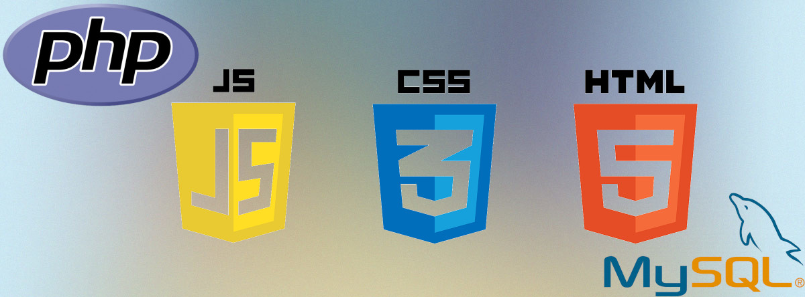

Développement web
Un des exemples les plus parlants est bien le webfolio ici présent, je l'ai créé par mes soins en HTML5/CSS3/JavaScript.
Le LPien
Etant très intéressé par le web et l'informatique en général, j'ai appris dans le cadre d'une ACF à créer un site dynamique en PHP et MySQL. Le site de l'association est disponible ici. Le site est développé en MVC et utilise la POO. J'espère dans parvenir à maitriser le framework Symphony d'ici quelques mois; ainsi que d'agrandir la liste des sites disponibles ici.